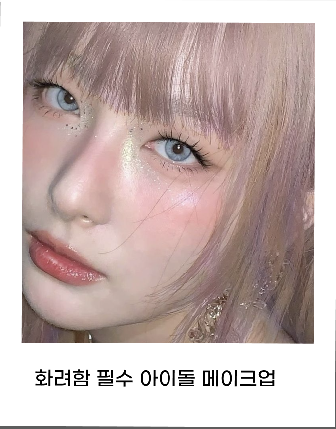
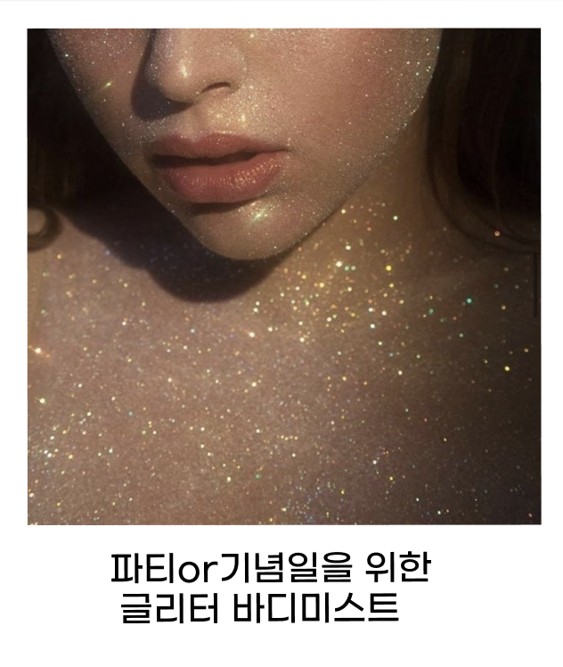
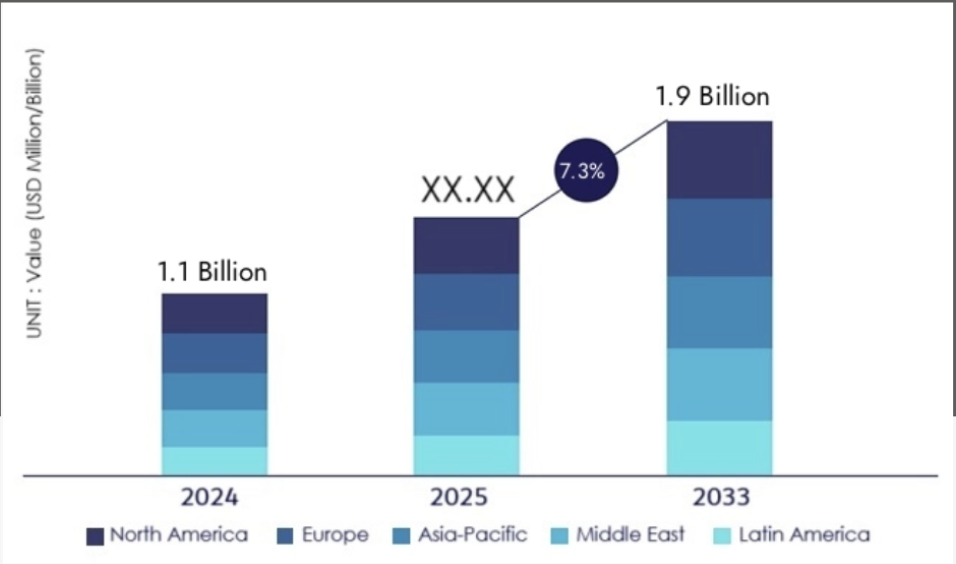
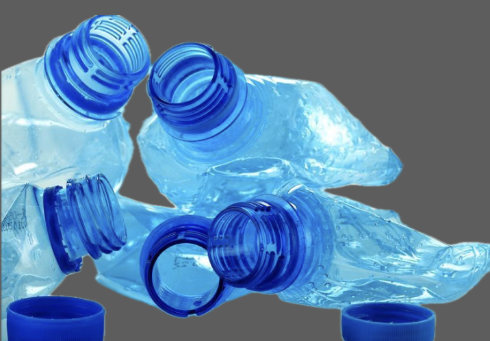
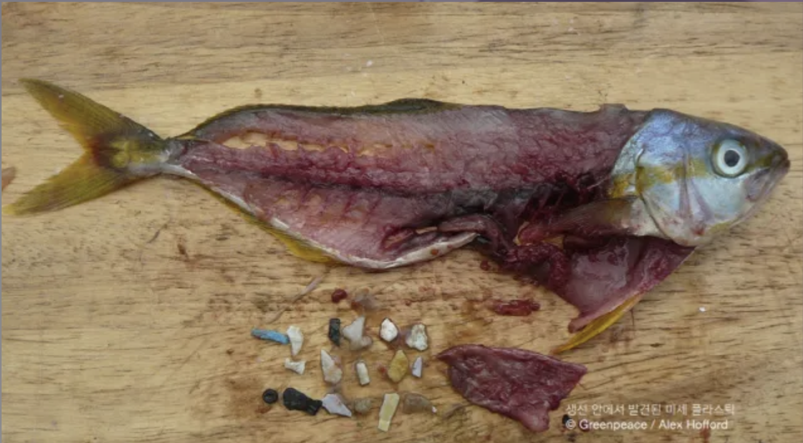
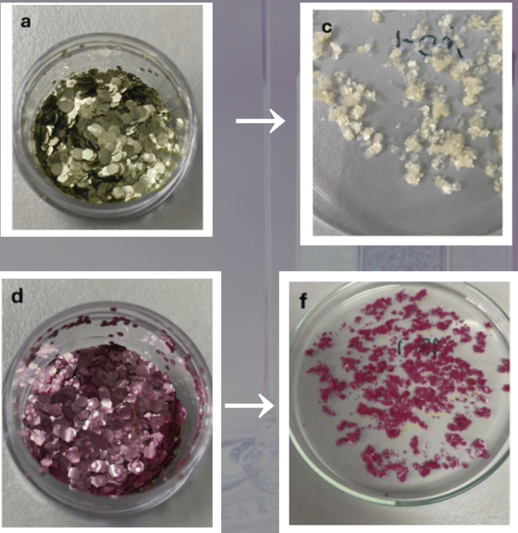

화려하고 다채로운 느낌을 주는 글리터화장품✨💖
 아이섀도, 립스틱, 네일, 미스트 등 글리터를 함유한 많은 제품들이 출시되고있다.
다양한 메이크업 표현이 가능한 글리터 화장품은 전 세계적으로 수요가 꾸준히 증가하고있으며, 앞으로도 상승세를 이어갈 것으로 전망된다.
PET소재로 만들어진 글리터의 크기는 대부분 5mm이하인 미세플라스틱이다. 세안 중 물과 함께 하수구로 흘러들어간 미세플라스틱은 강과 바다로 유입된다. 연안에 사는 각종 물고기와 해양 생물, 어패류는 이러한 작고 미세한 플라스틱을 먹이로 오인해 섭취하게 된다.
 생선 안에서 발견된 미세플라스틱 조각들
대안은 친환경 글리터?🤔
카르타헤나 공과대학(UPCT)과 화학 및 환경공학과의 연구에 따르면 친환경 글리터 또한 96일 간 실험했을 때도 완전히 분해가 되지 않았다.
글리터 화장품으로 인한 환경오염에 마땅한 해결책이 없는 지금, 중요한 것은 소비자들의 선택이다.